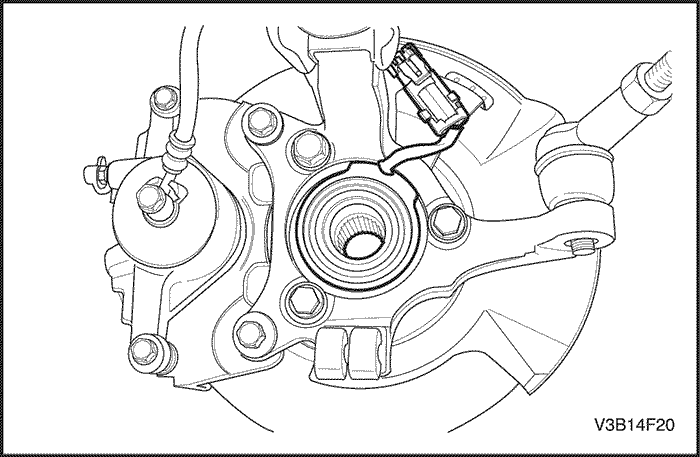
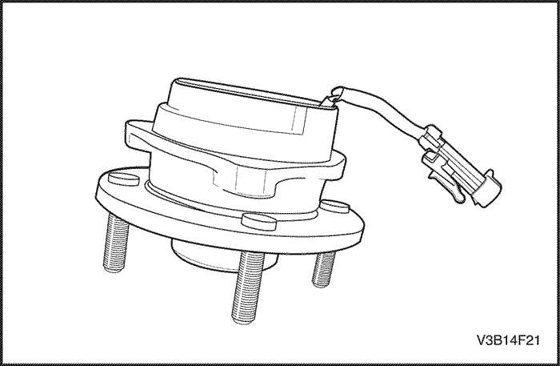
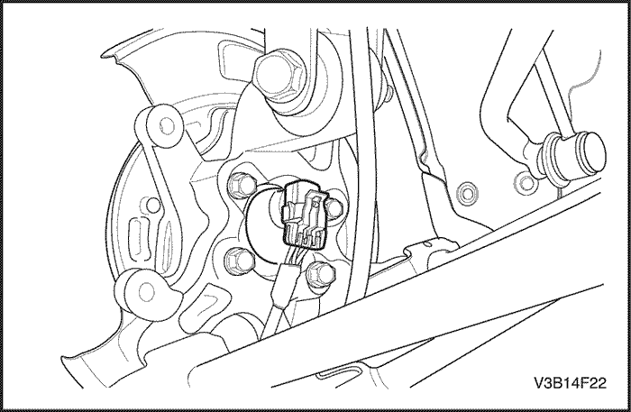
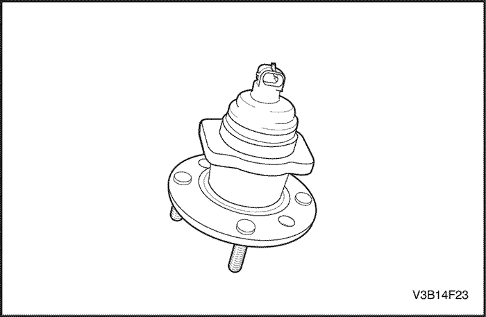

MANTENIMIENTO Y REPARACIÓN
servicio con vehículo en marcha
Precauciones para el servicio
Precaución: El líquido de frenos puede irritar los ojos y la piel. En caso de contacto, tome las medidas siguientes:
- Contacto con los ojos - lávelos completamente con agua.
- Contacto con la piel - lávela con agua y jabón.
- Ingestión - consiga asistencia médica inmediata.
Aviso: Cuando desmonte los elementos de sujeción, vuelva a instalarlos siempre en el mismo lugar del que fueron desmontados. Si es necesario sustituir un elemento de sujeción, utilice el elemento de repuesto con la referencia correcta para esa aplicación. Si no dispone del elemento con la referencia correcta, puede utilizar un elemento de sujeción del mismo tamaño y la misma resistencia (o una resistencia mayor). Se solicitarán aquellos elementos de sujeción que no se utilicen otra vez así como aquellos que requieran masilla de fijación de roscas. Cuando se monten elementos de sujeción que requieran un par de apriete, se aplicarán los valores correctos de dicho par. Si no se siguen los procedimientos mencionados anteriormente, podrían ocasionarse daños a las piezas o al sistema.
Aviso: Use solamente líquido de frenos hidráulicos DOT-4. Cuando necesite líquido de frenos, utilice el líquido apropiado que se indica en el tapón del depósito del líquido de frenos. No se recomienda el uso de líquido de frenos DOT 5 (silicona). De lo contrario, se podría empeorar el rendimiento o la durabilidad de los frenos.
Aviso: Evite los derrames de líquido de frenos sobre las superficies pintadas del vehículo, cables o conectores eléctricos. El líquido de frenos ocasionará daños en la pintura y en los conectores eléctricos. Si se derrama algo de líquido de frenos sobre el vehículo, lave la zona con agua para atenuar los daños.
Sistema de purga
Los moduladores de repuesto se envían llenos y purgados. En los procedimientos normales que requieren el desmontaje del modulador, tales como la sustitución del modulador hidráulico del ABS, hay que procurar que no entre aire en dicho modulador para que sólo sea necesario efectuar un proceso de purga normal. Para este procedimiento, consulte la
Sección 4A, Frenos hidráulicos.
Conjunto de la unidad de control electrónico hidráulico
Precaución: El líquido de frenos puede irritar los ojos y la piel. En caso de contacto, tome las medidas siguientes:
- Contacto con los ojos - lávelos completamente con agua.
- Contacto con la piel - lávela con agua y jabón.
- Si se ingiere, consulte inmediatamente a un médico.
Aviso: Evite las salpicaduras sobre las conexiones y cables. El líquido de frenos puede dañar las superficies pintadas y causar corrosión en los componentes eléctricos. Si el líquido de frenos entra en contacto con superficies pintadas, enjuague la zona inmediatamente con agua. Si el líquido de frenos entra en contacto con las conexiones eléctricas o los cables, utilice un trapo de taller limpio para retirar el líquido.


Procedimiento de desmontaje
- Gire la llave de contacto a la posición OFF.
- Desmonte el conjunto de filtro del aire.
- Limpie de suciedad y materiales extraños las zonas de empalmes de tubos del conjunto del modulador de frenos.

- Desenchufe el conector eléctrico del módulo electrónico de control de frenos (EBCM).
- Coloque una toalla de taller bajo el conjunto del modulador de frenos para recoger cualquier fuga de líquido de frenos.
Importante: Antes de desconectar los tubos de frenos del conjunto del modulador del sistema antibloqueo de frenos (ABS), anote las ubicaciones de los tubos para ayudarle en la posterior instalación.
- Desconecte las tuercas del rácor del tubo de freno de la válvula del modulador de presión de frenos (BPVM).
- Tapone los extremos del tubo de frenos para evitar pérdida de líquido o su contaminación.
- Tapone las aberturas del tubo del modulador para evitar pérdida de líquido o su contaminación.

- Quite los tornillos del soporte de fijación situado del panel de la carrocería.
- Quite los tornillos que unen el conjunto del modulador de frenos al soporte de fijación.
procedimiento de montaje
- Coloque los tornillos en el conjunto del modulador de frenos.
Apretar
Apriete los tornillos del conjunto del modulador de frenos hasta 11 N•m (8 lb-pie).
- Coloque el conjunto del modulador de frenos en el soporte.
- Monte el conjunto del modulador de frenos con el soporte de fijación acoplado al panel de la carrocería.
Apretar
Apriete los tornillos del soporte de fijación 10 N•m (89 lbs-pulg.).
- Quite los tapones de los extremos del tubo de freno del cilindro maestro.
- Quite los tapones de las entradas del cilindro maestro del conjunto del modulador.
- Conecte los tubos de freno del cilindro maestro al conjunto del modulador, en la misma ubicación de la que fueron desmontados.
- Apriete las tuercas de los rácores de los tubos de freno.
Apretar
Apriete las tuercas de los rácores hasta 16 N•m (12 lb-pie).
- Enchufe el conector eléctrico al EBCM.
- Coloque el conjunto de filtro del aire.
- Purgue el sistema hidráulico de frenos. Consulte la Sección 4A, Frenos hidráulicos.
- Coloque la llave de encendido en la posición ON. NO ponga en marcha el motor.
- Lleve a cabo la Comprobación para el diagnóstico del circuito de esta sección.

Sensor de velocidad de ruedas delanteras
Procedimiento de desmontaje y montaje
- Desconecte el cable negativo de la batería.
- Levante y apoye el vehículo adecuadamente.
- Desenchufe el conector eléctrico del sensor de velocidad de la rueda delantera.
- Desmonte la unidad del cubo de rueda delantera del conjunto de la mangueta ya que el sensor de velocidad no se puede reparar por separado.

Aviso de montaje
El sensor de la velocidad de la rueda debe repararse como un conjunto (cubo-sensor de velocidad de la rueda), por lo tanto, no hace falta el procedimiento adicional de trabajo para el entrehierro.

Sensor de velocidad de ruedas traseras
Procedimiento de desmontaje y montaje
- Desconecte el cable negativo de la batería.
- Levante y apoye el vehículo adecuadamente.
- Desenchufe el conector eléctrico del sensor de velocidad de la rueda trasera.
- Desmonte la unidad del cubo de rueda trasera del conjunto de la mangueta ya que el sensor de velocidad no se puede reparar por separado.
Aviso de montaje
El sensor de la velocidad de la rueda debe repararse como un conjunto (cubo-sensor de velocidad de la rueda), por lo tanto, no hace falta el procedimiento adicional de trabajo para el entrehierro.


Sensor de nivel de oscilación
Procedimiento de desmontaje
- Desmonte la caja de la consola del piso.

- Desmonte el sensor de nivel de oscilación.
procedimiento de montaje
- Monte el sensor de nivel de oscilación.
Apretar
Apriete el tornillo del sensor de nivel de oscilación a los bajos de la carrocería hasta 9 N•m (80 lb-pie).
- Instale la caja de la consola del piso.
| © Copyright Chevrolet Europe. Reservados todos los derechos |